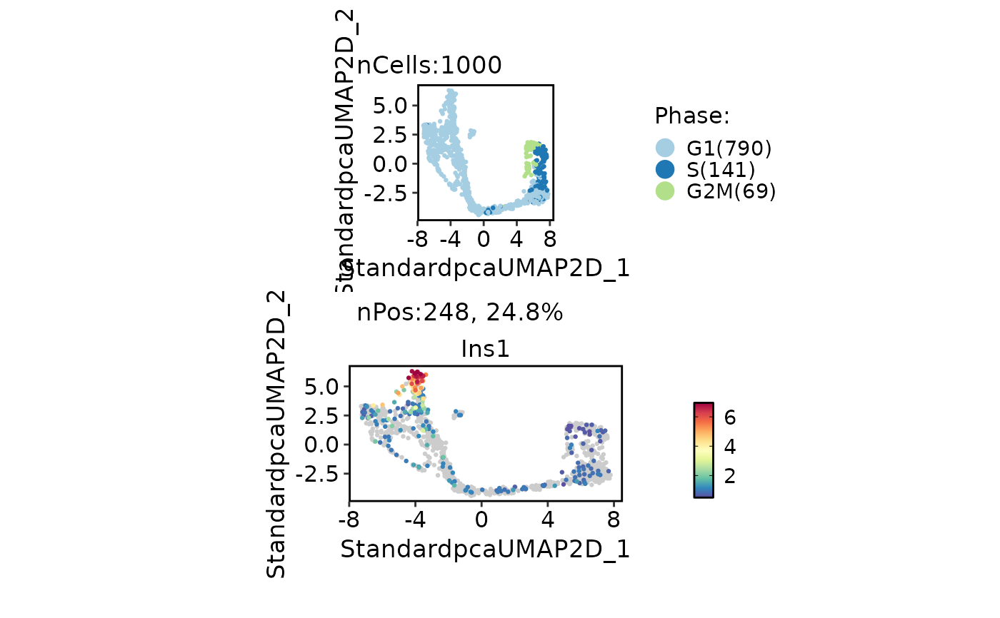
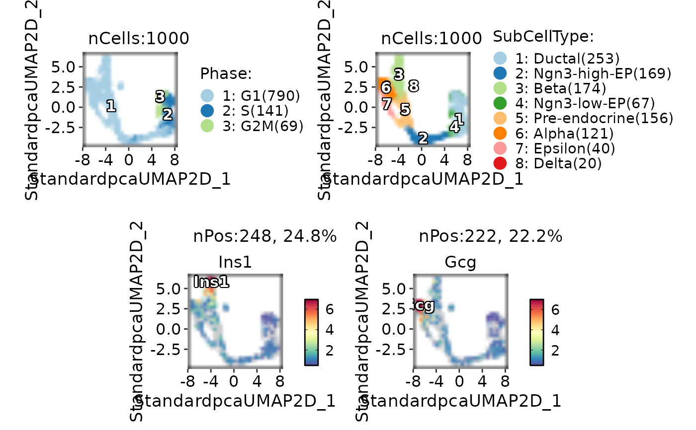
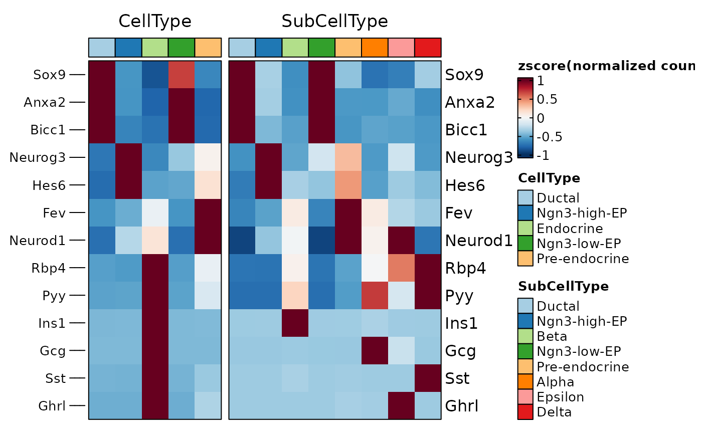
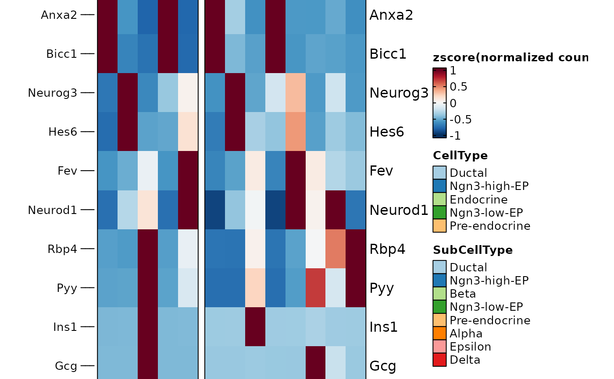
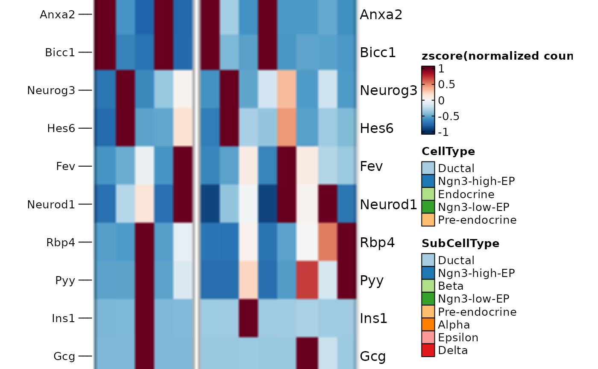
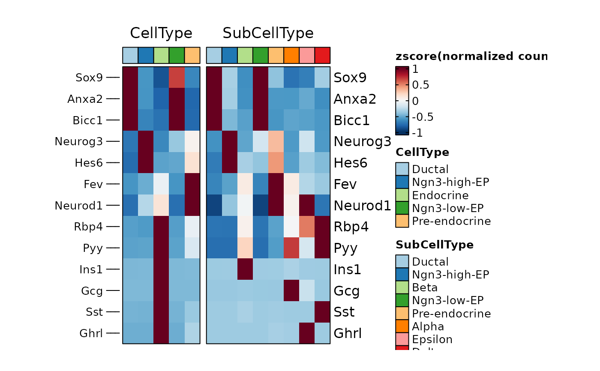

The ggplot object, when stored, can only specify the height and width of the entire plot, not the panel. The latter is obviously more important to control the final result of a plot. This function can set the panel width/height of plot to a fixed value and rasterize it.
Usage
panel_fix(
x = NULL,
panel_index = NULL,
respect = NULL,
width = NULL,
height = NULL,
margin = 1,
padding = 0,
units = "in",
raster = FALSE,
dpi = 300,
return_grob = FALSE,
bg_color = "white",
save = NULL,
verbose = FALSE,
...
)
panel_fix_overall(
x,
panel_index = NULL,
respect = NULL,
width = NULL,
height = NULL,
margin = 1,
units = "in",
raster = FALSE,
dpi = 300,
return_grob = FALSE,
bg_color = "white",
save = NULL,
verbose = TRUE
)Arguments
- x
A ggplot object, a grob object, or a combined plot made by patchwork or cowplot package.
- panel_index
Specify the panel to be fixed. If
NULL, will fix all panels.- respect
Whether row heights and column widths should respect each other.
- width
The desired width of the fixed panels.
- height
The desired height of the fixed panels.
- margin
The margin to add around each panel, in inches. Default is
1.- padding
The padding to add around each panel, in inches. Default is
0.- units
The units in which
height,widthandmarginare given. Can be"mm","cm","in", etc. See grid::unit.- raster
Whether to rasterize the panel.
- dpi
Plot resolution.
- return_grob
Whether to return a grob object instead of a wrapped
patchworkobject. Default isFALSE.- bg_color
The background color of the plot.
- save
NULLor the file name used to save the plot.- verbose
Whether to print the message. Default is
TRUE.- ...
Additional arguments passed to other functions.
Examples
library(ggplot2)
p <- ggplot(
data = mtcars, aes(x = mpg, y = wt, colour = cyl)
) +
geom_point() +
facet_wrap(~gear, nrow = 2)
# fix the size of panel
panel_fix(
p,
width = 5,
height = 3,
units = "cm"
)
# rasterize the panel
panel_fix(
p,
width = 5,
height = 3,
units = "cm",
raster = TRUE,
dpi = 90
)
#> ℹ [2025-10-26 10:40:33] png and ragg installed successfully
#> ℹ [2025-10-26 10:40:33] png and ragg installed successfully
#> ℹ [2025-10-26 10:40:33] png and ragg installed successfully
# `panel_fix` will build and render the plot when the input is a ggplot object.
# so after `panel_fix`, the size of the object will be changed.
object.size(p)
#> 368016 bytes
object.size(
panel_fix(
p,
width = 5,
height = 3,
units = "cm"
)
)
#> 1377056 bytes
## save the plot with appropriate size
# p_fix <- panel_fix(
# p,
# width = 5,
# height = 3,
# units = "cm"
# )
# plot_size <- attr(p_fix, "size")
# ggsave(
# filename = "p_fix.png",
# plot = p_fix,
# units = plot_size$units,
# width = plot_size$width,
# height = plot_size$height
# )
## or save the plot directly
# p_fix <- panel_fix(
# p,
# width = 5,
# height = 3,
# units = "cm",
# save = "p_fix.png"
# )
# fix the panel of the plot combined by `patchwork`
data(pancreas_sub)
pancreas_sub <- standard_scop(pancreas_sub)
#> ℹ [2025-10-26 10:40:33] Start standard scop workflow...
#> ℹ [2025-10-26 10:40:34] Checking a list of <Seurat> object...
#> ! [2025-10-26 10:40:34] Data 1/1 of the `srt_list` is "unknown"
#> ℹ [2025-10-26 10:40:34] Perform `NormalizeData()` with `normalization.method = 'LogNormalize'` on the data 1/1 of the `srt_list`...
#> ℹ [2025-10-26 10:40:36] Perform `Seurat::FindVariableFeatures()` on the data 1/1 of the `srt_list`...
#> ℹ [2025-10-26 10:40:37] Use the separate HVF from srt_list
#> ℹ [2025-10-26 10:40:37] Number of available HVF: 2000
#> ℹ [2025-10-26 10:40:37] Finished check
#> ℹ [2025-10-26 10:40:37] Perform `Seurat::ScaleData()`
#> ℹ [2025-10-26 10:40:37] Perform pca linear dimension reduction
#> StandardPC_ 1
#> Positive: Aplp1, Cpe, Gnas, Fam183b, Map1b, Hmgn3, Pcsk1n, Chga, Tuba1a, Bex2
#> Syt13, Isl1, 1700086L19Rik, Pax6, Chgb, Scgn, Rbp4, Scg3, Gch1, Camk2n1
#> Cryba2, Pcsk2, Pyy, Tspan7, Mafb, Hist3h2ba, Dbpht2, Abcc8, Rap1b, Slc38a5
#> Negative: Spp1, Anxa2, Sparc, Dbi, 1700011H14Rik, Wfdc2, Gsta3, Adamts1, Clu, Mgst1
#> Bicc1, Ldha, Vim, Cldn3, Cyr61, Rps2, Mt1, Ptn, Phgdh, Nudt19
#> Smtnl2, Smco4, Habp2, Mt2, Col18a1, Rpl12, Galk1, Cldn10, Acot1, Ccnd1
#> StandardPC_ 2
#> Positive: Rbp4, Tagln2, Tuba1b, Fkbp2, Pyy, Pcsk2, Iapp, Tmem27, Meis2, Tubb4b
#> Pcsk1n, Dbpht2, Rap1b, Dynll1, Tubb2a, Sdf2l1, Scgn, 1700086L19Rik, Scg2, Abcc8
#> Atp1b1, Hspa5, Fam183b, Papss2, Slc38a5, Scg3, Mageh1, Tspan7, Ppp1r1a, Ociad2
#> Negative: Neurog3, Btbd17, Gadd45a, Ppp1r14a, Neurod2, Sox4, Smarcd2, Mdk, Pax4, Btg2
#> Sult2b1, Hes6, Grasp, Igfbpl1, Gpx2, Cbfa2t3, Foxa3, Shf, Mfng, Tmsb4x
#> Amotl2, Gdpd1, Cdc14b, Epb42, Rcor2, Cotl1, Upk3bl, Rbfox3, Cldn6, Cer1
#> StandardPC_ 3
#> Positive: Nusap1, Top2a, Birc5, Aurkb, Cdca8, Pbk, Mki67, Tpx2, Plk1, Ccnb1
#> 2810417H13Rik, Incenp, Cenpf, Ccna2, Prc1, Racgap1, Cdk1, Aurka, Cdca3, Hmmr
#> Spc24, Kif23, Sgol1, Cenpe, Cdc20, Hist1h1b, Cdca2, Mxd3, Kif22, Ska1
#> Negative: Anxa5, Pdzk1ip1, Acot1, Tpm1, Anxa2, Dcdc2a, Capg, Sparc, Ttr, Pamr1
#> Clu, Cxcl12, Ndrg2, Hnf1aos1, Gas6, Gsta3, Krt18, Ces1d, Atp1b1, Muc1
#> Hhex, Acadm, Spp1, Enpp2, Bcl2l14, Sat1, Smtnl2, 1700011H14Rik, Tgm2, Fam159a
#> StandardPC_ 4
#> Positive: Glud1, Tm4sf4, Akr1c19, Cldn4, Runx1t1, Fev, Pou3f4, Gm43861, Pgrmc1, Arx
#> Cd200, Lrpprc, Hmgn3, Ppp1r14c, Pam, Etv1, Tsc22d1, Slc25a5, Akap17b, Pgf
#> Fam43a, Emb, Jun, Krt8, Dnajc12, Mid1ip1, Ids, Rgs17, Uchl1, Alcam
#> Negative: Ins2, Ins1, Ppp1r1a, Nnat, Calr, Sytl4, Sdf2l1, Iapp, Pdia6, Mapt
#> G6pc2, C2cd4b, Npy, Gng12, P2ry1, Ero1lb, Adra2a, Papss2, Arhgap36, Fam151a
#> Dlk1, Creld2, Gip, Tmem215, Gm27033, Cntfr, Prss53, C2cd4a, Lyve1, Ociad2
#> StandardPC_ 5
#> Positive: Pdx1, Nkx6-1, Npepl1, Cldn4, Cryba2, Fev, Jun, Chgb, Gng12, Adra2a
#> Mnx1, Sytl4, Pdk3, Gm27033, Nnat, Chga, Ins2, 1110012L19Rik, Enho, Krt7
#> Mlxipl, Tmsb10, Flrt1, Pax4, Tubb3, Prrg2, Gars, Frzb, BC023829, Gm2694
#> Negative: Irx2, Irx1, Gcg, Ctxn2, Tmem27, Ctsz, Tmsb15l, Nap1l5, Pou6f2, Gria2
#> Ghrl, Peg10, Smarca1, Arx, Lrpap1, Rgs4, Ttr, Gast, Tmsb15b2, Serpina1b
#> Slc16a10, Wnk3, Ly6e, Auts2, Sct, Arg1, Dusp10, Sphkap, Dock11, Edn3
#> ℹ [2025-10-26 10:40:38] Perform `Seurat::FindClusters()` with louvain and `cluster_resolution` = 0.6
#> ℹ [2025-10-26 10:40:39] Reorder clusters...
#> ℹ [2025-10-26 10:40:39] Perform umap nonlinear dimension reduction
#> ℹ [2025-10-26 10:40:39] Non-linear dimensionality reduction (umap) using (Standardpca) dims (1-50) as input
#> ℹ [2025-10-26 10:40:39] UMAP will return its model
#> ℹ [2025-10-26 10:40:43] Non-linear dimensionality reduction (umap) using (Standardpca) dims (1-50) as input
#> ℹ [2025-10-26 10:40:43] UMAP will return its model
#> ✔ [2025-10-26 10:40:48] Run scop standard workflow done
p1 <- CellDimPlot(
pancreas_sub,
"Phase",
aspect.ratio = 1
)
p2 <- FeatureDimPlot(
pancreas_sub,
"Ins1",
aspect.ratio = 0.5
)
p <- p1 / p2
# fix the panel size for each plot,
# the width will be calculated automatically based on `aspect.ratio`
panel_fix(p, height = 1)

# fix the panel of the plot combined by plot_grid
if (requireNamespace("cowplot", quietly = TRUE)) {
p1 <- CellDimPlot(
pancreas_sub,
c("Phase", "SubCellType"),
label = TRUE
)
p2 <- FeatureDimPlot(
pancreas_sub,
c("Ins1", "Gcg"),
label = TRUE
)
p <- cowplot::plot_grid(
p1,
p2,
nrow = 2
)
# plot is combined by plot_grid
# fix the size of panel for each plot
panel_fix(p, height = 1)
# rasterize the panel while keeping all labels and text in vector format
panel_fix(p, height = 1, raster = TRUE, dpi = 30)
}
#> ℹ [2025-10-26 10:40:49] png and ragg installed successfully
#> ℹ [2025-10-26 10:40:49] png and ragg installed successfully
#> ℹ [2025-10-26 10:40:50] png and ragg installed successfully
#> ℹ [2025-10-26 10:40:50] png and ragg installed successfully

# fix the panel of the heatmap
ht <- GroupHeatmap(pancreas_sub,
features = c(
"Sox9", "Anxa2", "Bicc1", # Ductal
"Neurog3", "Hes6", # EPs
"Fev", "Neurod1", # Pre-endocrine
"Rbp4", "Pyy", # Endocrine
"Ins1", "Gcg", "Sst", "Ghrl"
# Beta, Alpha, Delta, Epsilon
),
group.by = c("CellType", "SubCellType"),
show_row_names = TRUE
)
#> 'magick' package is suggested to install to give better rasterization.
#>
#> Set `ht_opt$message = FALSE` to turn off this message.
# the size of the heatmap is not fixed and can be resized by zooming the viewport
ht$plot

# fix the size of the heatmap according the current viewport
panel_fix(ht$plot)

# rasterize the heatmap body
panel_fix(ht$plot, raster = TRUE, dpi = 30)
#> ℹ [2025-10-26 10:40:51] png and ragg installed successfully

# fix the size of overall heatmap including annotation and legend
panel_fix(ht$plot, height = 4, width = 6)
